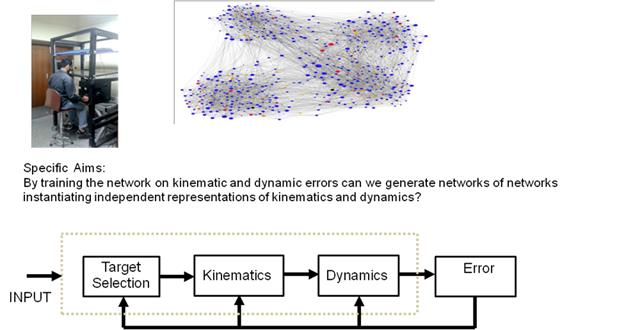
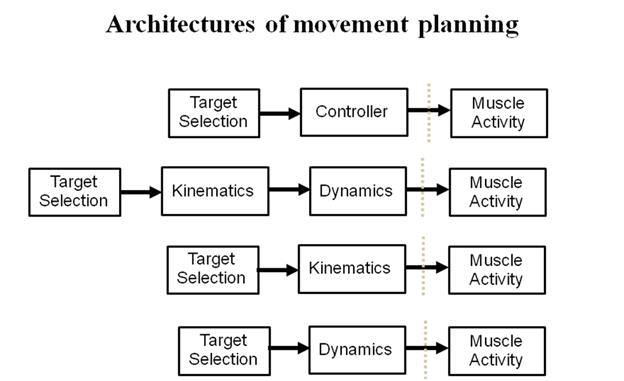

Developing an artificial neural network model for motor control
Research group
Aditya Murthy and Ashitava Ghosal
Centre For Neuroscience, IISc and Department of Mechanical Engineering, IISc
In what way the central nervous system directs a large number of muscles to produce complex motor behaviors is an open question. By using Artifical neural networks (ANNs) this project seeks to understand how representations in the central nervous system that encode decision signals from the sensory input are transformed into representations of movement plans that are eventually executed by the spinal cord and muscles in the periphery. Motivated by the recent resurgence in machine learning using “deep learning” architectures, where more number of hidden layers are used for learning a specific task, we propose to understand whether and how networks of networks might naturally emerge during the course of motor learning. For example, by incorporating, redundancy in muscles and joints, we will test for the existence of muscle and joint synergies within the hidden layers of our networks. It is expected that this project will provide fundamental insights into the neural and cognitive architecture of motor control. We anticipate that in the long term this work will be useful to develop brain machine interface systems (exoskeletons).


Specific Aims:
By training the network on position, kinematic and dynamic errors,
can we generate networks of networks instantiating independent representations
that allow us to distinguish between different architectures that generate motor control?
By incorporating biological constraints (characteristics)
can we generate representations/hidden units that mimic what is seen in the data?
(eg muscle synergies by adding redundancy in joints and muscles)
Long terms goals: Implement a ANN that controls an arm in software and test on an exoskeleton
|